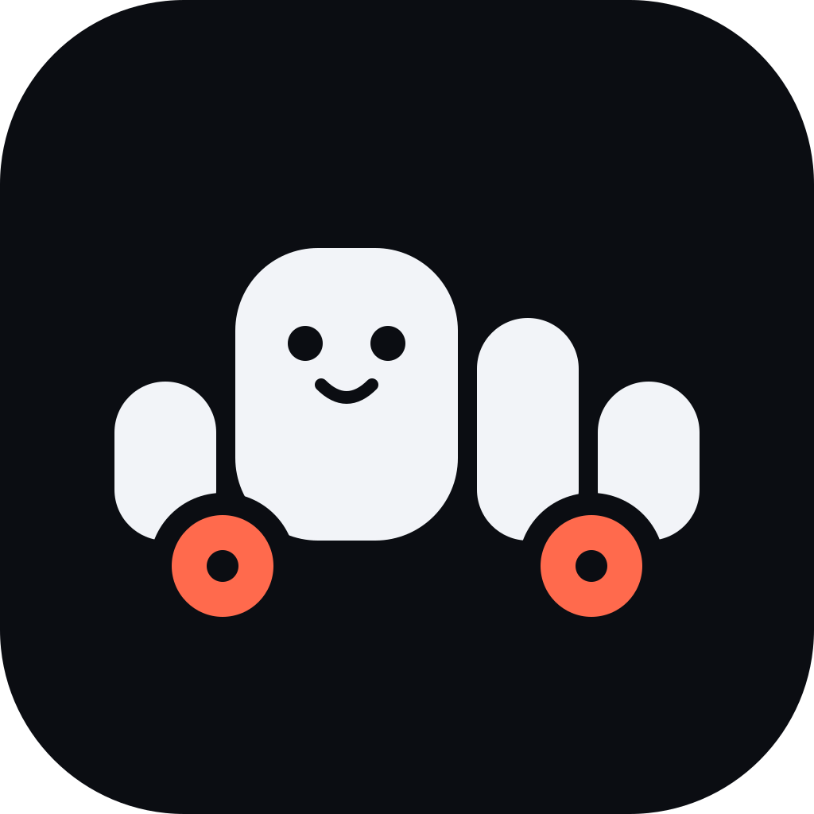

차곡차곡은 차 안에서 나눈 가족의 대화를 일기로 남깁니다.
녹음을 시작하면 차 안의 대화가 녹음돼요.
녹음은 글로 바꾸고, 일기로 정리해요.
기록은 직접 삭제할 때까지 보관해요.
새로운 사람이 함께 탈 때는 녹음 전에 다시 알려 주세요.
차곡차곡 프로토타입의 현재 동작 안내입니다.
시작 버튼을 누른 뒤 녹음 시작을 직접 눌러야 녹음됩니다. 원본 음성, 인식문과 수정문, 완성 일기, 첨부 사진, 입력하거나 조회한 차량 정보와 녹음 시작 위치를 기록합니다. 위치를 받지 못해도 녹음할 수 있습니다.
녹음 원본은 차량 기기에 먼저 보관됩니다. 휴대폰과 연결하면 완성 일기와 원본, 차량 정보·녹음 위치가 설정된 테스트 서버의 가족 보관함으로 자동 동기화됩니다. 연결된 같은 가족의 차량과 휴대폰에서 확인할 수 있습니다.
현재 정해진 기간 후 자동 삭제하는 기능은 없습니다. 일기 삭제를 요청하면 원본과 연결된 기록·사진도 삭제 대상이 됩니다. 다른 기기의 사본 삭제는 해당 기기가 다시 연결되어 변경을 수신한 후 반영됩니다.
음성 인식에는 차량 SDK를 사용합니다. 이번 프로토타입의 일기 생성은 ‘AI 생성 일기 목업 입니다.’라는 고정 결과이며 외부 생성 AI API를 호출하지 않습니다.
정식 운영을 위한 이용약관·개인정보 처리방침은 별도 확정 대상입니다.